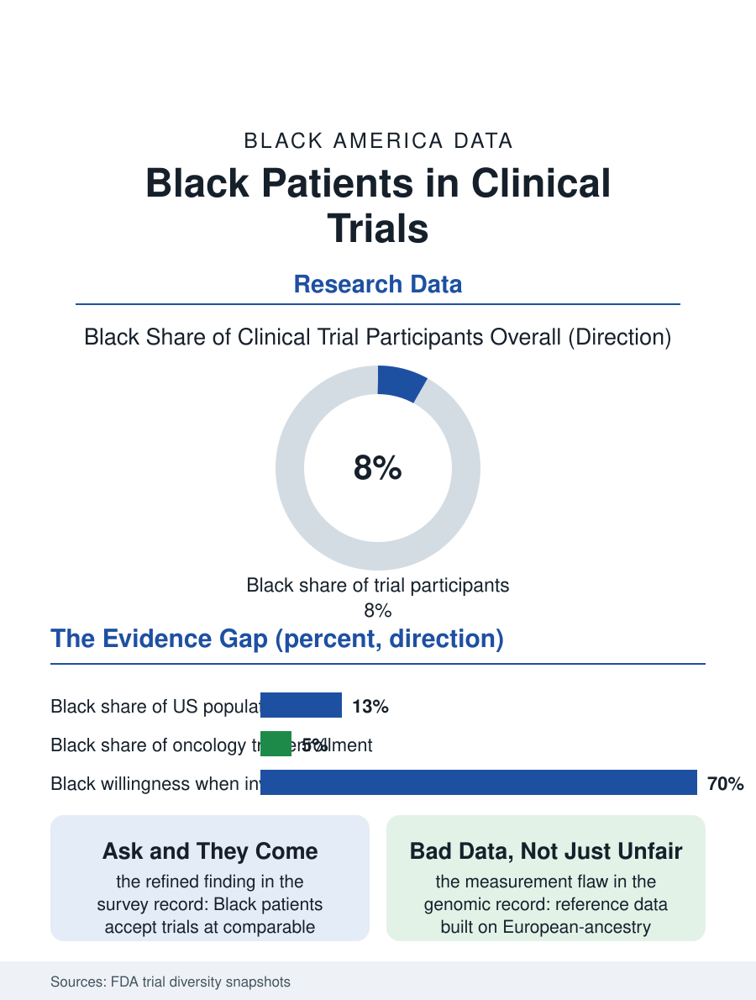

Black Public Health
Tested on Whom: Black Patients and Clinical Trials
Black patients are under-enrolled in the trials that set doses and approvals, mostly for logistics and referral reasons, degrading the evidence itself. The trials file.

Black Americans constitute about thirteen percent of the population and a substantially smaller share, historically in the single digits, of participants in the clinical trials that decide which medicines reach the market and at what doses. The Food and Drug Administration's trial diversity data have made the gap a standing regulatory concern. This article reads the trials file, where the population the drugs will treat meets the evidence for treating them.
The Enrollment Gap
The FDA's annual snapshots of trial demographics draw the pattern across therapeutic areas: oncology trials enrolling Black participants at fractions of the cancer burden's share, cardiovascular and metabolic trials performing somewhat better, the vaccine trials of the pandemic era achieving notably fuller enrollment under public scrutiny, the exception that demonstrated the rule's contingency. The causes compose the file's anatomy: site geography, since trials run at academic centers whose catchments and referral networks underreach the Black patient population; eligibility criteria, whose comorbidity exclusions, kidney function thresholds calibrated on reference populations, prior-treatment rules, filter the Black applicant pool disproportionately; the visit burden, trials demanding weekday daytime attendance at distant sites from the hourly workforce of the schedule file; and trust, the variable the literature has refined past the slogan, finding in the survey data that Black patients express willingness to participate at rates comparable to other groups when actually invited, the invitation itself being the system's scarcest output, physicians offering trials to Black patients at lower measured rates in the encounter studies. The Tuskegee study's name does real work in the culture and is routinely over-credited in the analysis: the modern barrier file is mostly logistics, geography, and the referral pen, which is worse news in one way, since it implicates the ordinary system rather than a singular historical crime, and better in another, since logistics yield to money and effort faster than memory does.
Why the Gap Is a Scientific Problem
The enrollment gap is not only an equity datum; it is a measurement flaw in the evidence itself, and the file's examples are concrete. Drug metabolism varies with the genetic ancestry distributions that trial populations sample unevenly, the dosing and efficacy findings of an under-enrolled trial carrying uncertainty exactly where the treated population will be largest, as with the heart failure therapies whose response patterns in Black patients required dedicated trials after approval to establish. The biomarker and genomic era compounds the flaw: the reference genomes and polygenic scores built from overwhelmingly European-ancestry samples perform measurably worse in Black patients, a degradation the genomics literature quantifies and the precision medicine enterprise has had to engineer around, recruiting Black cohorts explicitly to repair the reference data. The regulatory response has escalated across the recent era from exhortation to requirement, diversity action plans mandated for pivotal trials, the sponsors' enrollment infrastructure extending into community sites and the churches and barbershops of the outreach files, with the early returns showing improvement where the investment is real. The sickle cell file stands as the system's proof of concept in reverse: the one disease whose trials have always enrolled Black participants at full strength is the one whose therapeutic pipeline, culminating in gene therapies, advanced fastest relative to its market size, a correlation the research policy literature cites whenever the enrollment question is framed as charity rather than method.
The Community's Terms
The file closes with the terms the community's own institutions have set for fuller participation, which the successful recruiters follow and the failing ones discover: return of results to participants and communities as a condition, Black investigators and community advisory boards with real governance rather than decorative roles, compensation and logistics that respect the hourly worker's arithmetic, and the research presence made permanent, the clinic that stays after the trial ends, rather than extractive, the van that leaves. The HBCU medical schools and the minority research infrastructure built across the last generation exist precisely on these terms, and their trial portfolios' enrollment performance is the file's evidence that the gap is a design outcome, reversible by design. The FDA counts the enrollment shares each year, and the trend, from a low base, bends the right way under requirement and investment. The file's judgment matches the data's: a drug tested on a population unlike the one that will take it is a hypothesis, and the Black share of the treated population, in hypertension, diabetes, cancer, and the rest of this section's ledger, is far too large for the hypothesis to remain the standard. The trials file is where the atlas's medicine either becomes evidence-based for Black America or admits, in its methods section, that it is not.
More in Black Public Health
Hypertension Among Black Adults: Prevalence, Control, and Consequences
About 55 percent of Black adults have hypertension — the highest rate of any U.S. group. Prevalence, onset, control, and the stroke, heart, and kidney consequences in the data.
Diabetes Among Black Adults: Prevalence and Complications
Nearly one in five Black adults has diabetes, diagnosed or undiagnosed — and its complications fall with particular weight. The CDC data on prevalence, control, and outcomes.
Black Life Expectancy: The Gap at Birth and Its Causes
Black life expectancy at birth is about 73 years, roughly five years below the national figure — the summary measure of every health gap in this section. The CDC data.
Source: U.S. Food and Drug Administration, Drug Trials Snapshots and diversity guidance data; clinical research enrollment literature.